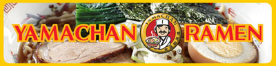
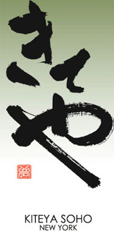
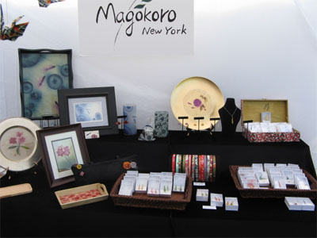

Vendors
Food
What could be better than Japanese food?! Savory, saucy, or sweet... Give your palette a cultural experience of a lifetime. At CJS Matsuri 2010, we have even more vendors than before! Try dishes from great Japanese restaurants all over the city without having to buy a Metrocard.
-
Go Go Curry
Go Go Curry is an authentic fast-food restaurant that serves Japanese curry. The name, "Go Go Curry" comes from the former New York Yankees baseball player, Hideki Matsui, whose number was 55 (five in Japanese is "Go" and since there are two fives "Go Go"). The restaurant is thus baseball-themed, and the curry portions come in the following sizes - Walk (S), Single (M), Double (L), Triple (XL), and Grand Slam - to reflect the theme. Come taste delicious Japanese curry and restore your energy for the variety of sidelines activities!
-
Hataka Tonton
Hakata Tonton is an authentic Kyushu-style Japanese restaurant that prides itself between Bleecker Street and 7th Avenue. Food portions are small and come in small plates so that a variety of foods can be shared and tasted. Hakata Tonton will be selling pork skewers at Matsuri. Get ready for some appetizing pork skewers and plunge yourself into the Matsuri spirit!
-
OMS/B
Oms/B (read omusubi) is a café that serves Omusubi, or rice balls. Due to its easily portable nature, rice balls have traditionally been brought on travels. The Omusubi served by Oms/B can be enjoyed with a variety of fillings and toppings and is a convenient and perfect treat for busy New Yorkers. Get a taste of the different fillings Oms/B will provide at their vendor booth!
-
Yamachan Ramen
Yamachan Ramen is a company that makes a wide assortment of ramen noodles. The owner of Yamachan Ramen will be serving ramen noodles at Matsuri. Eat warm, delicious ramen noodles to your heart's content and treat yourself to some cool Kakigori (shaved ice) by the CJS sidelines booths!

Other
-
Kiteya
Kiteya is a store with traditional Japanese craftwork in Soho. The word "Kiteya" comes from the meaning, "Please come" in the Kyoto dialect, and Kiteya welcomes customers from all over to visit their store in downtown New York City. There is a variety of decorative accessories with contemporary designs from Kyoto. These include not only stationary and house-ware (lamps and wall decorations), but also t-shirts and sweatshirts with Japanese designs. Come check out the beautiful accessories that Kiteya offers! Matsuri ni kiteya! (Please come to Matsuri!)
 -
Magokoro New York
Magokoro New York is a store that offers a collection of accessories decorated with pieces of Japanese traditional Washi paper. These include earrings, pins, necklaces, and pins, in addition to beautiful mirror, combs, headbands, and trays ornamented with Washi paper. Magokoro New York will be providing Yuzen Washi Art at Matsuri. Enjoy the different Yuzen Washi artworks and embrace yourself in Japanese traditional artwork!
 -
Te plus te
Te plus te is a store in Pleasantville, New York that offers original, hand-made accessories including handbags, hand-dyed Japanese Indigo and Persimmon scarves, ceramics, home accessories. Te plus te carefully chooses materials to make the products one-of-a-kind. Come check out the variety of Te plus te items and enjoy Matsuri in style!
-
Wuhao New York
Wuhao New York is an online shopping company that offers Tenugui (Japanese traditional towel). Ruri Kabashima Kippenbrock, the owner, seeks to promote Japanese tenugui tradition and culture by creating hand-made tenugui and selling it online to reach a wider community. Come and see the beautiful tenugui made Wuhao style!